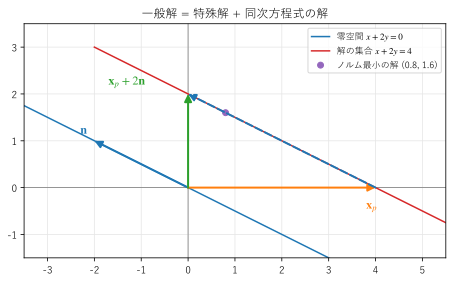

第 8 章 ランクと 4 つの基本部分空間
この章では、行列の「実質的な大きさ」を表すランクを導入し、行列に付随する 4 つの部分空間を調べる。これにより、連立一次方程式 \(A\bm{x} = \bm{b}\) がいつ解を持ち、解がどのような形をしているかが、正方行列に限らず完全に分かる。
ランク
\(m \times n\) 行列 \(A\) の列ベクトルのうち、線形独立なものの最大の本数を、\(A\) のランク（階数）といい、\(\mathrm{rank}\,A\) と書く。ランクは、列ベクトルが張る空間の次元でもある。
ランクは、行基本変形で求められる。行基本変形を繰り返して、次の形の行列にする。
各行の、最初の 0 でない成分（ピボット）は 1 である。
ピボットは、下の行ほど右にある。
ピボットのある列の、ピボット以外の成分はすべて 0 である。
すべての成分が 0 の行は、一番下にまとめる。
この形の行列を被約階段行列（reduced row echelon form、RREF）という。ピボットの個数がランクに等しい。例として、次の行列を考える。
被約階段行列を求めるコードを リスト 26 に示す。
15def rref(a: ArrayLike, tol: float = 1e-10) -> tuple[Matrix, list[int]]:
16 """被約階段行列と、ピボットのある列の番号のリストを返す."""
17 m = np.array(a, dtype=float)
18 rows, cols = m.shape
19 pivots: list[int] = []
20 r = 0 # 次にピボットを置く行
21 for c in range(cols):
22 if r == rows:
23 break
24 p = r + int(np.argmax(np.abs(m[r:, c])))
25 if abs(m[p, c]) < tol:
26 continue # この列にはピボットがない（自由変数の列）
27 m[[r, p]] = m[[p, r]]
28 m[r] /= m[r, c] # ピボットを 1 にする
29 for i in range(rows):
30 if i != r:
31 m[i] -= m[i, c] * m[r] # ピボットの上下を 0 にする
32 pivots.append(c)
33 r += 1
34 m[np.abs(m) < tol] = 0.0
35 return m, pivots
浮動小数点数の計算では、0 になるはずの値が丸め誤差でわずかに 0 からずれる。そのため、絶対値が tol より小さい値を 0 とみなしている。ピボットには、その列で絶対値が最大の成分を選んでいる（第 13 章のピボット選択）。
被約階段行列 =
[[1. 2. 0. 1.]
[0. 0. 1. 2.]
[0. 0. 0. 0.]]
ピボットのある列（0 から数える）: [0, 2]
ランク = 2 np.linalg.matrix_rank = 2
零空間の基底ベクトル [-2. 1. 0. 0.] a @ x = [0. 0. 0.]
零空間の基底ベクトル [-1. 0. -2. 1.] a @ x = [ 0. -0. -0.]
列空間の次元 2、零空間の次元 2（R^4 の中）
行空間の次元 2、左零空間の次元 1（R^3 の中）
左零空間の基底ベクトル [ 1. 1. -1.] y @ a = [0. 0. 0. 0.]
被約階段行列は次のようになる。
ピボットは 1 列目と 3 列目にあり、ランクは 2 である。\(A\) の 3 行目は 1 行目と 2 行目の和なので、実質的には 2 本の方程式しかない。
ランクについて、次の重要な事実がある。
行ベクトルのうち線形独立なものの最大の本数も、ランクに等しい（\(\mathrm{rank}\,A = \mathrm{rank}\,A^\top\)）。
したがって、\(m \times n\) 行列のランクは \(m\) 以下かつ \(n\) 以下である。
\(n\) 次の正方行列について、\(\mathrm{rank}\,A = n\) と \(\det A \ne 0\) は同値である。
4 つの基本部分空間
\(m \times n\) 行列 \(A\) には、次の 4 つの部分空間が付随する。
名前 |
定義 |
どこにあるか |
次元 |
|---|---|---|---|
\(A\) の列ベクトルが張る空間。\(A\bm{x}\) の形で表せるベクトル全体 |
\(\mathbb{R}^m\) |
\(r\) |
|
\(A\bm{x} = \bm{0}\) を満たす \(\bm{x}\) 全体（核とも呼ぶ） |
\(\mathbb{R}^n\) |
\(n - r\) |
|
行空間 |
\(A\) の行ベクトルが張る空間（\(A^\top\) の列空間） |
\(\mathbb{R}^n\) |
\(r\) |
左零空間 |
\(\bm{y}^\top A = \bm{0}^\top\) を満たす \(\bm{y}\) 全体（\(A^\top\) の零空間） |
\(\mathbb{R}^m\) |
\(m - r\) |
ここで \(r = \mathrm{rank}\,A\) である。列空間は、線形写像 \(\bm{x} \mapsto A\bm{x}\) の行き先全体であり、像とも呼ばれる。零空間は、\(A\) で原点に潰れてしまうベクトル全体である。
4 つの部分空間の関係を 図 11 に示す。4 つの基本部分空間で行列を理解する見方は、Strang の教科書 [Strang2016] で詳しく解説されている。
図 11 行列の 4 つの基本部分空間の関係
この図の要点は次のとおりである。
次元定理。定義域 \(\mathbb{R}^n\) の次元 \(n\) は、行空間の次元 \(r\) と零空間の次元 \(n - r\) に分かれる。つまり
\[\mathrm{rank}\,A + \dim(\text{零空間}) = n\]が成り立つ。これを次元定理（ランク・退化次数の定理）という。「\(n\) 次元の入力のうち、\(n - r\) 次元分が潰れて、\(r\) 次元分が出力に残る」と読める。
直交性。零空間のベクトルは、行空間のどのベクトルとも直交する。\(A\bm{x} = \bm{0}\) は「\(\bm{x}\) と \(A\) の各行の内積が 0」という意味だからである。同様に、左零空間は列空間と直交する。この直交性は、第 9 章の最小二乗法で重要になる。
上の例の行列 \(A\)（\(m = 3\)、\(n = 4\)、\(r = 2\)）では、零空間の次元は \(4 - 2 = 2\)、左零空間の次元は \(3 - 2 = 1\) である。実行結果の零空間の基底ベクトル \((-2, 1, 0, 0)\) と \((-1, 0, -2, 1)\) は、被約階段行列から次のように求めたものである。ピボットのない列（2 列目と 4 列目）に対応する変数 \(x_2, x_4\) は自由に選べる（自由変数）。\(R\bm{x} = \bm{0}\) は \(x_1 = -2x_2 - x_4\)、\(x_3 = -2x_4\) なので、\((x_2, x_4) = (1, 0)\) と \((0, 1)\) を代入すると 2 本の基底ベクトルが得られる。
38def null_space_basis(a: ArrayLike) -> list[Matrix]:
39 """零空間の基底を、自由変数を 1 つずつ 1 にした解として返す."""
40 r, pivots = rref(a)
41 cols = r.shape[1]
42 free = [c for c in range(cols) if c not in pivots]
43 basis = []
44 for f in free:
45 x = np.zeros(cols)
46 x[f] = 1.0
47 for row, p in enumerate(pivots):
48 x[p] = -r[row, f] + 0.0 # + 0.0 で -0.0 を 0.0 にする
49 basis.append(x)
50 return basis
実行結果の a @ x に表示される -0. は、丸め誤差による非常に小さな負の数である。左零空間の基底ベクトル \(\bm{y} = (1, 1, -1)\) は「1 行目 + 2 行目 - 3 行目 = 0」という行の間の関係を表している。
サンプルの全体：ch08_rank.py
解の存在と解の構造
4 つの部分空間を使うと、連立一次方程式 \(A\bm{x} = \bm{b}\) について、次のことが分かる。
解が存在する条件。\(A\bm{x}\) は列ベクトルの線形結合なので、解が存在するのは \(\bm{b}\) が \(A\) の列空間に含まれるときであり、そのときに限る。ランクで言えば、\(A\) に \(\bm{b}\) を加えた拡大係数行列 \((A \mid \bm{b})\) のランクが、\(A\) のランクと等しいときである（\(\bm{b}\) を加えても、線形独立な列が増えない）。
解の構造。解が存在するとき、解の 1 つを \(\bm{x}_p\) とする（特殊解）。\(\bm{x}_n\) を零空間の任意のベクトルとすると、\(A(\bm{x}_p + \bm{x}_n) = \bm{b} + \bm{0} = \bm{b}\) なので、\(\bm{x}_p + \bm{x}_n\) も解である。逆に、任意の解 \(\bm{x}\) について \(A(\bm{x} - \bm{x}_p) = \bm{0}\) なので、\(\bm{x} - \bm{x}_p\) は零空間に含まれる。したがって、解全体は
と表される。これを一般解という。一般解は「特殊解 + 同次方程式 \(A\bm{x} = \bm{0}\) の解」である。この構造は、線形の微分方程式の一般解（特殊解 + 同次方程式の一般解）とまったく同じである。
図 12 は、1 本の方程式 \(x + 2y = 4\)（\(A = (1 \ \ 2)\)）の解の構造である。零空間は原点を通る直線 \(x + 2y = 0\) で、基底ベクトルは \(\bm{n} = (-2, 1)\) である。解の集合は、零空間を特殊解 \(\bm{x}_p = (4, 0)\) だけ平行移動した直線になる。\(\bm{x}_p\) に \(2\bm{n}\) を加えた \((0, 2)\) も解である。


図 12 一般解 = 特殊解 + 同次方程式の解。点線の矢印は xp に 2n を加える操作
解の集合のうち、原点に最も近い点（ノルムが最小の解）:math:(0.8, 1.6) は、零空間と直交する方向、つまり行空間の中にある。ノルム最小の解は、第 12 章で扱う擬似逆行列で求められる。
サンプルの全体：ch08_solution_structure.py
まとめると、\(m \times n\) 行列 \(A\)（ランク \(r\)）の連立一次方程式 \(A\bm{x} = \bm{b}\) は、次のように分類できる。
ランク |
解の存在 |
解の個数 |
|---|---|---|
\(r = m = n\) |
任意の \(\bm{b}\) で存在する |
ただ 1 つ |
\(r = m < n\) |
任意の \(\bm{b}\) で存在する |
無数（\(n - r\) 次元分の自由度） |
\(r = n < m\) |
\(\bm{b}\) が列空間にあるときだけ存在する |
存在すればただ 1 つ |
\(r < m\) かつ \(r < n\) |
\(\bm{b}\) が列空間にあるときだけ存在する |
存在すれば無数 |
3 番目の場合（方程式が未知数より多い）は、測定データの当てはめでよく現れる。測定には誤差があるので、\(\bm{b}\) は通常、列空間に入らず、厳密な解は存在しない。そこで、誤差が最小になる \(\bm{x}\) を求めるのが、第 9 章の最小二乗法である。
この章のまとめ
ランクは、線形独立な列ベクトル（行ベクトル）の最大の本数であり、被約階段行列のピボットの個数として求められる。
行列には、列空間、零空間、行空間、左零空間の 4 つの基本部分空間が付随する。
次元定理：ランク + 零空間の次元 = 列の数。
\(A\bm{x} = \bm{b}\) の解は、\(\bm{b}\) が列空間にあるときに存在し、一般解は「特殊解 + 零空間のベクトル」である。